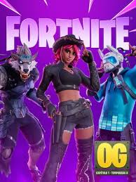

Fortnite es un videojuego multijugador en línea desarrollado por Epic Games, lanzado en 2017. Es conocido principalmente por su modo Battle Royale, en el que 100 jugadores compiten para ser el último en pie en un mapa que se reduce progresivamente, pero también incluye modos cooperativos como Save the World y creativos que permiten construir estructuras y diseñar experiencias propias. El juego combina disparos, construcción, estrategia y eventos en tiempo real, lo que lo convierte en un fenómeno global dentro de los juegos competitivos y sociales.
Epic Games es el estudio detrás de Fortnite, responsable tanto del desarrollo como de la publicación y actualización constante del juego. Utiliza el motor Unreal Engine, lo que permite gráficos estilizados, físicas realistas y un flujo constante de contenidos nuevos. La comunidad de jugadores influye activamente en eventos, temporadas y colaboraciones especiales con franquicias externas.
Fortnite se mantiene actualizado constantemente con temporadas nuevas que incluyen cambios en el mapa, desafíos, skins, armas y mecánicas de juego. Las actualizaciones más recientes han añadido nuevos eventos temáticos, modos temporales, mejoras de jugabilidad y ajustes de balance para armas y construcción, manteniendo la experiencia fresca y dinámica para jugadores de todo el mundo.